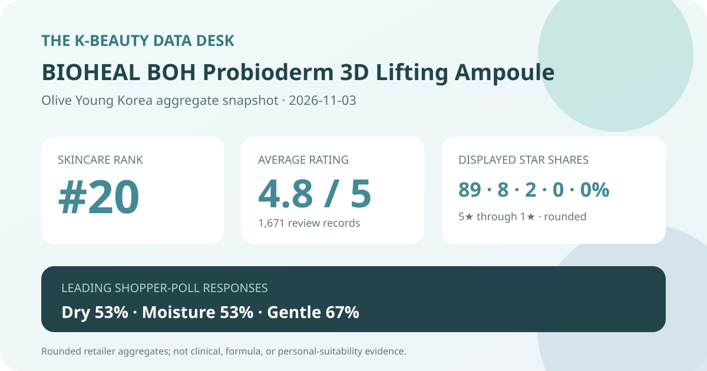
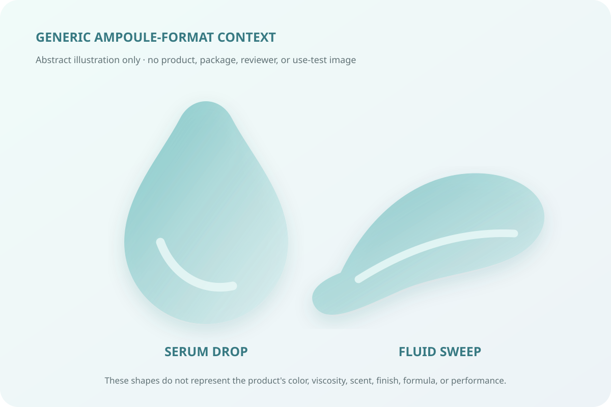

Data captured November 3, 2026. This analysis uses only the retailer's displayed product title, ranking position, aggregate rating, star distribution, shopper polls, and anonymous aggregate themes. It does not copy or translate individual review text, reviewer names, or photos, and it makes no claim of firsthand use.

The short version: BIOHEAL BOH Probioderm 3D Lifting Ampoule appeared at number 20 in the captured skincare sales ranking. Its product header and detailed review view agreed on 4.8 out of 5 from 1,671 records. Five-star selections made up 89% of the displayed distribution; dry skin and moisture were the leading poll responses, while 67% selected the gentle response. These are retail signals, not proof of lifting, wrinkle change, hydration, tolerance, or clinical performance.
The displayed average was 4.8 stars. Olive Young showed 1,671 review records in the product header, and the official detailed review view repeated the same score and total. That internal match matters: it reduces the risk of accidentally pairing a score from one product state with a count from another.
The detailed view displayed these rounded star shares:
The rows total 99% because the retailer rounds each share to a whole number. The useful conclusion is that high ratings dominate this retail pool: 97 displayed percentage points sit in the four- and five-star rows. The missing percentage point should not be assigned to any star level, and zero on a rounded row does not prove that no one ever chose that rating.
A high average across more than a thousand records is a meaningful popularity-and-satisfaction signal inside this retailer. It still compresses different routines, climates, sensitivities, purchase dates, application amounts, and option configurations. It cannot show why each score was selected or prove that the formula caused a particular result.
The skin-type panel displayed 53% dry, 43% combination, and 3% oily. Those rounded shares total 99%. Dry respondents formed the largest displayed group, with combination respondents close behind. Oily respondents were much less represented.
That is sample composition, not a recommendation. The interface did not expose the panel denominator, whether every reviewer answered, how respondents classified themselves, or the routine and climate in which the ampoule was used. A 53% dry share does not establish that the product is more effective for dry skin, and a 3% oily share does not show that oily skin should avoid it.
The concern panel showed 53% moisture, 27% wrinkle or brightening, and 20% soothing. Moisture was the leading label, but this is a shopper response rather than a hydration measurement. No corneometer result, transepidermal-water-loss reading, comparator, defined application amount, or time point was captured.
The wrinkle or brightening response also needs restraint. It does not measure wrinkle depth, elasticity, pigmentation, or change over time. The soothing share does not establish treatment of irritation or redness. These labels show how respondents categorized their impressions within the retailer's survey, nothing more.
The irritation panel displayed 67% gentle, 31% ordinary, and 2% felt irritation. A majority selected the favorable label, yet nearly one third chose ordinary and a nonzero group selected felt irritation. That is a more useful reading than reducing the panel to “gentle.”
The source did not provide a patch-test protocol, dermatologist assessment, allergy screening, or severity and duration data. The poll cannot predict individual compatibility. Anyone with a known allergy, active condition, damaged barrier, or history of reactions should inspect the current regional ingredient list and follow appropriate professional guidance rather than rely on the aggregate.

The retailer classifies this item as an ampoule. That identifies the format, but it does not verify color, scent, viscosity, stringiness, spread, absorption speed, residue, finish, pilling, or compatibility with sunscreen and makeup. I did not open, dispense, or apply the product.
The local illustration above deliberately avoids depicting the actual product or package. It provides a generic visual cue for a drop-based serum or ampoule format. Real sensory behavior depends on the formula, amount, underlying layers, application method, humidity, temperature, and the rest of the routine.
The retailer's anonymous automated summary labeled 91% of its recent summarized subset as positive. Its broad topic groups concerned perceived firmness or elasticity, moisture retention, and mild-feeling use. Those themes are reported only at the aggregate level; no individual review sentence, reviewer identity, or photo is reproduced or translated here.
An automated summary is a compressed classification of a subset, not a measurement and not a complete account of all 1,671 records. The source did not expose the exact subset size, model error rate, or topic-assignment rules. “Firmness” language therefore remains a theme in shopper impressions, not proof of lifting or structural skin change.
Those words appear in the product identity and retailer title. This article treats them as naming and marketing context. The captured aggregate data does not establish the identity or concentration of any ingredient, penetration depth, collagen change, facial contour change, or lifting effect.
A 4.8 retail average cannot demonstrate treatment of laxity, wrinkles, pigmentation, inflammation, or another medical concern. The concern poll and automated themes are subjective aggregate signals. Buyers who care about formula details should check the current package and regional disclosure instead of inferring ingredients or outcomes from the name.
Rank 20 describes one moment in Olive Young Korea's skincare sales list. It is not a quality rank and not a claim that the ampoule is the twentieth-best skincare product. Promotion placement, price, stock, advertising, gifts, and recent demand can all affect the order.
The captured page described a 30 ml ampoule with single or gift-plan options, displayed a ₩35,000 reference price and a starting promotional price of ₩10,400, and showed a temporary sold-out state for the visible option. Because the page was option-based, those numbers should not be treated as the permanent price of one fixed package. Confirm selected volume, gifts, stock, current formula, seller, coupon conditions, return terms, and final checkout total.
BIOHEAL BOH Probioderm 3D Lifting Ampoule was the first valid unpublished product after 19 higher-ranked existing products or normalized product families were skipped. The listing passed the consistency check: ranking and detail titles agreed, and both review surfaces showed 4.8 stars from 1,671 records.
The distribution is strongly positive, with 89% five-star and 8% four-star. Dry respondents led the skin-type poll at 53%; moisture led the concern poll at 53%; and 67% selected the gentle response. The recent automated summary was 91% positive and grouped impressions around firmness, moisture, and mild-feeling use.
The responsible conclusion stops there. The data supports describing a well-rated retail record and the themes visible in the retailer's own aggregate tools. It does not prove lifting, hydration, wrinkle change, soothing, safety, or fit. Verify the exact option and current label, and treat personal compatibility as a separate decision.
Method note: Numbers are transcribed from the retailer's displayed aggregate interfaces and retained with their original whole-number rounding. No individual review was used as evidence in this article.
← All reviews · Rankings · Skin-poll representation · About & methodology
Published by The K-Beauty Data Desk · Aggregate data captured 2026-11-03. No product or user photograph is reproduced, and the product was not tested for this analysis. Check the dated source listing.